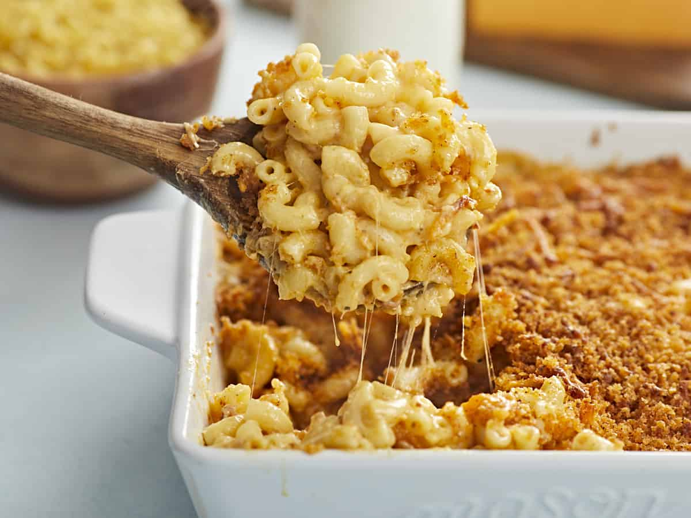

Homemade Mac and Cheese

Description
This homemade mac and cheese is topped with buttered bread crumbs for pure comfort food.
It's easy to make the cheese sauce from scratch, starting with a roux and adding milk, Cheddar, and Parmesan to make a rich, decadent sauce that coats every nook and cranny of the noodles.
Ingredients
- Macaroni
- Butter
- Flour
- Milk
- Cheese
- Seasonings
- Bread Crumbs
Steps
- Boil the noodles, drain, and transfer to a prepared baking dish.
- Make the cheese sauce, pour the sauce over the noodles, and stir.
- Make the topping, spread it over macaroni and cheese, sprinkle with paprika.
- Bake the mac and cheese until the topping is golden brown.